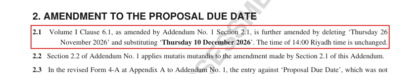

Deliver the Proposal to the Authority by the Proposal Due Date and time, at the Appendix 3 address
Quote at ADD-03: “not later than 14:00 hours Riyadh time on Thursday 10 December 2026”
Consequence: rejection “will be rejected unopened and returned to the Bidder”
Latest source: VOL-I 6.1 p3 as amended by ADD-03 2.1 p1; confidence high: verbatim text-layer clause; the consequence is stated in VOL-I 6.6
Decision needed: Accept that Deliver the Proposal to the Authority by the Proposal Due Date and time, at the Appendix 3 address is required as quoted, and that failing it is rejection under the words “will be rejected unopened and returned to the Bidder” (VOL-I 6.6 p3). Otherwise reject it with what is wrong.
python -m tenderpack accept VOL-I-6.1-01 --reviewer "Your Name" [--note "..."] python -m tenderpack reject VOL-I-6.1-01 --reviewer "Your Name" --note "what is wrong"